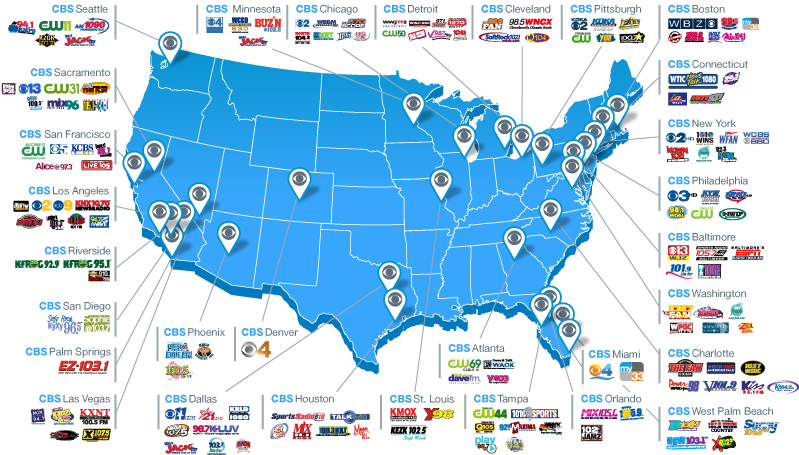
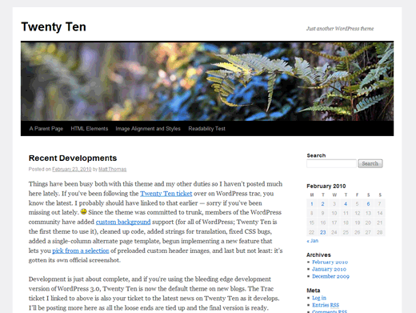

Your browser doesn't support the features required by impress.js, so you are presented with a simplified version of this presentation.
For the best experience please use the latest Chrome, Safari or Firefox browser.
Welcome
Customizing the Custom Loop
Alexander Sapountzis
Worked with WordPress for 4 years
Worked at Bloomberg Businessweek
He's the one with the beard
Jeffrey Marx
Worked with WordPress for 8 years
Worked at Gannet Newspapers
Snappy Dresser (ladies!)
What is CBS Local?
Network of local sites for news and media, consolidating CBS' media content
- Radio
- TV
- News
- Original Content

We use Wordpress!
Done with the five minute install?

- Featured Posts
- Category Boxes
- Cool stuff
- Not boring!
How do we do this?
(pay attention, this will be on the test)
The Global Query
Runs once on every page
Returns all relevant posts based on params
- Home Page Query returns all posts
- Category Page Query returns all for that category
- Single Post Page Query returns a single, lonely post
WordPress does all this for free
...what's the problem? Why bother with custom loops?
Because you may need to:
Categorize content
use Custom Post Types
not have a boring site
Tools of the trade
- query_posts()
- WP_Query
- get_posts()
Query_posts()
- Modifies global query (That's a bad thing)
- Can cause unpredictable behavior
- Ignore tutorials that endorse this function
Get_posts()
- Safer but not ideal
- Limited - Not as powerful or useful
- Some Template Tags may not work
Got Questions?
Twitter
@jeffmarx
@asapountzis
Download
github.com/jmarx/Wordcamp-NYC-2012